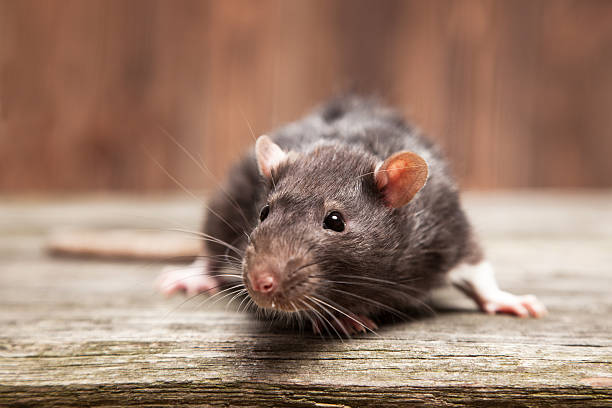

<!DOCTYPE html>
<html lang="en">

<head>
    <meta charset="UTF-8">
    <meta name="viewport" content="width=device-width, initial-scale=1.0">
    <title>Actividad 4</title>

    <link rel="stylesheet" href="https://cdn.jsdelivr.net/npm/bootstrap@5.3.3/dist/css/bootstrap.min.css"
        rel="stylesheet" integrity="sha384-QWTKZyjpPEjISv5WaRU9OFeRpok6YctnYmDr5pNlyT2bRjXh0JMhjY6hW+ALEwIH"
        crossorigin="anonymous">
    <script src="https://cdn.jsdelivr.net/npm/bootstrap@5.3.3/dist/js/bootstrap.bundle.min.js"
        integrity="sha384-YvpcrYf0tY3lHB60NNkmXc5s9fDVZLESaAA55NDzOxhy9GkcIdslK1eN7N6jIeHz"
        crossorigin="anonymous"></script>
    <link rel="stylesheet" href="css/estilopag.css">

</head>
<body>
</body>

</html>
<body>
    <!-- Header -->
    <header>
        <h1>La madriguera </h1>
    </header>

    <!-- Navegación -->
    <nav>
        <nav class="navbar navbar-expand-lg bg-body-tertiary">
            <div class="container-fluid">
              <a class="navbar-brand" href="index1.html">La madriguera</a>
              <button class="navbar-toggler" type="button" data-bs-toggle="collapse" data-bs-target="#navbarSupportedContent" aria-controls="navbarSupportedContent" aria-expanded="false" aria-label="Toggle navigation">
                <span class="navbar-toggler-icon"></span>
              </button>
              <div class="collapse navbar-collapse" id="navbarSupportedContent">
                <ul class="navbar-nav me-auto mb-2 mb-lg-0">
                  <li class="nav-item">
                    <a class="nav-link active" aria-current="page"href="index1.html">Inicio</a>
                  </li>
                  <li class="nav-item">
                    <a class="nav-link" href="index2.html">Alimentación</a>
                  </li>
                  <li class="nav-item dropdown">
                    <a class="nav-link dropdown-toggle" href="index3.html" role="button" data-bs-toggle="dropdown" aria-expanded="false">
                      Habitat
                    </a>
                    <ul class="dropdown-menu">
                      <li><a class="dropdown-item" href="index3.html">En cautiverio</a></li>
                      <li><a class="dropdown-item" href="#">En la vida salvaje</a></li>
                    
                      
                    </ul>
                  </li>
                  <li class="nav-item">
                    <a class="nav-link disabled" aria-disabled="true"></a>
                  </li>
                </ul>
                <form class="d-flex" role="search">
                  <input class="form-control me-2" type="search" placeholder="Buscar" aria-label="Search">
                  <button class="btn btn-outline-success" type="submit">Buscar</button>
                </form>
              </div>
            </div>
          </nav>
    </nav>

    <!-- Contenido principal de la homepage -->
    <main>
        
        <!doctype html>
        <html lang="en" data-bs-theme="auto">
          <head><script src="../assets/js/color-modes.js"></script>
        
            <meta charset="utf-8">
            <meta name="viewport" content="width=device-width, initial-scale=1">
            <meta name="description" content="">
            <meta name="author" content="Mark Otto, Jacob Thornton, and Bootstrap contributors">
            <meta name="generator" content="Hugo 0.122.0">
            <title>Blog Template · Bootstrap v5.3</title>
        
            <link rel="canonical" href="https://getbootstrap.com/docs/5.3/examples/blog/">
        
            
        
            <link rel="stylesheet" href="https://cdn.jsdelivr.net/npm/@docsearch/css@3">
        
        <link href="../assets/dist/css/bootstrap.min.css" rel="stylesheet">
        
            
            <!-- Custom styles for this template -->
            <link href="https://fonts.googleapis.com/css?family=Playfair&#43;Display:700,900&amp;display=swap" rel="stylesheet">
            <!-- Custom styles for this template -->
            <link href="blog.css" rel="stylesheet">
          </head>
          <body>
            <svg xmlns="http://www.w3.org/2000/svg" class="d-none">
              <symbol id="check2" viewBox="0 0 16 16">
                <path d="M13.854 3.646a.5.5 0 0 1 0 .708l-7 7a.5.5 0 0 1-.708 0l-3.5-3.5a.5.5 0 1 1 .708-.708L6.5 10.293l6.646-6.647a.5.5 0 0 1 .708 0z"/>
              </symbol>
              <symbol id="circle-half" viewBox="0 0 16 16">
                <path d="M8 15A7 7 0 1 0 8 1v14zm0 1A8 8 0 1 1 8 0a8 8 0 0 1 0 16z"/>
              </symbol>
              <symbol id="moon-stars-fill" viewBox="0 0 16 16">
                <path d="M6 .278a.768.768 0 0 1 .08.858 7.208 7.208 0 0 0-.878 3.46c0 4.021 3.278 7.277 7.318 7.277.527 0 1.04-.055 1.533-.16a.787.787 0 0 1 .81.316.733.733 0 0 1-.031.893A8.349 8.349 0 0 1 8.344 16C3.734 16 0 12.286 0 7.71 0 4.266 2.114 1.312 5.124.06A.752.752 0 0 1 6 .278z"/>
                <path d="M10.794 3.148a.217.217 0 0 1 .412 0l.387 1.162c.173.518.579.924 1.097 1.097l1.162.387a.217.217 0 0 1 0 .412l-1.162.387a1.734 1.734 0 0 0-1.097 1.097l-.387 1.162a.217.217 0 0 1-.412 0l-.387-1.162A1.734 1.734 0 0 0 9.31 6.593l-1.162-.387a.217.217 0 0 1 0-.412l1.162-.387a1.734 1.734 0 0 0 1.097-1.097l.387-1.162zM13.863.099a.145.145 0 0 1 .274 0l.258.774c.115.346.386.617.732.732l.774.258a.145.145 0 0 1 0 .274l-.774.258a1.156 1.156 0 0 0-.732.732l-.258.774a.145.145 0 0 1-.274 0l-.258-.774a1.156 1.156 0 0 0-.732-.732l-.774-.258a.145.145 0 0 1 0-.274l.774-.258c.346-.115.617-.386.732-.732L13.863.1z"/>
              </symbol>
              <symbol id="sun-fill" viewBox="0 0 16 16">
                <path d="M8 12a4 4 0 1 0 0-8 4 4 0 0 0 0 8zM8 0a.5.5 0 0 1 .5.5v2a.5.5 0 0 1-1 0v-2A.5.5 0 0 1 8 0zm0 13a.5.5 0 0 1 .5.5v2a.5.5 0 0 1-1 0v-2A.5.5 0 0 1 8 13zm8-5a.5.5 0 0 1-.5.5h-2a.5.5 0 0 1 0-1h2a.5.5 0 0 1 .5.5zM3 8a.5.5 0 0 1-.5.5h-2a.5.5 0 0 1 0-1h2A.5.5 0 0 1 3 8zm10.657-5.657a.5.5 0 0 1 0 .707l-1.414 1.415a.5.5 0 1 1-.707-.708l1.414-1.414a.5.5 0 0 1 .707 0zm-9.193 9.193a.5.5 0 0 1 0 .707L3.05 13.657a.5.5 0 0 1-.707-.707l1.414-1.414a.5.5 0 0 1 .707 0zm9.193 2.121a.5.5 0 0 1-.707 0l-1.414-1.414a.5.5 0 0 1 .707-.707l1.414 1.414a.5.5 0 0 1 0 .707zM4.464 4.465a.5.5 0 0 1-.707 0L2.343 3.05a.5.5 0 1 1 .707-.707l1.414 1.414a.5.5 0 0 1 0 .708z"/>
              </symbol>
            </svg>
        
            <div class="dropdown position-fixed bottom-0 end-0 mb-3 me-3 bd-mode-toggle">
              <button class="btn btn-bd-primary py-2 dropdown-toggle d-flex align-items-center"
                      id="bd-theme"
                      type="button"
                      aria-expanded="false"
                      data-bs-toggle="dropdown"
                      aria-label="Toggle theme (auto)">
                <svg class="bi my-1 theme-icon-active" width="1em" height="1em"><use href="#circle-half"></use></svg>
                <span class="visually-hidden" id="bd-theme-text">Toggle theme</span>
              </button>
              <ul class="dropdown-menu dropdown-menu-end shadow" aria-labelledby="bd-theme-text">
                <li>
                  <button type="button" class="dropdown-item d-flex align-items-center" data-bs-theme-value="light" aria-pressed="false">
                    <svg class="bi me-2 opacity-50" width="1em" height="1em"><use href="#sun-fill"></use></svg>
                    Light
                    <svg class="bi ms-auto d-none" width="1em" height="1em"><use href="#check2"></use></svg>
                  </button>
                </li>
                <li>
                  <button type="button" class="dropdown-item d-flex align-items-center" data-bs-theme-value="dark" aria-pressed="false">
                    <svg class="bi me-2 opacity-50" width="1em" height="1em"><use href="#moon-stars-fill"></use></svg>
                    Dark
                    <svg class="bi ms-auto d-none" width="1em" height="1em"><use href="#check2"></use></svg>
                  </button>
                </li>
                <li>
                  <button type="button" class="dropdown-item d-flex align-items-center active" data-bs-theme-value="auto" aria-pressed="true">
                    <svg class="bi me-2 opacity-50" width="1em" height="1em"><use href="#circle-half"></use></svg>
                    Auto
                    <svg class="bi ms-auto d-none" width="1em" height="1em"><use href="#check2"></use></svg>
                  </button>
                </li>
              </ul>
            </div>
        
            
        <svg xmlns="http://www.w3.org/2000/svg" class="d-none">
          <symbol id="aperture" fill="none" stroke="currentColor" stroke-linecap="round" stroke-linejoin="round" stroke-width="2" viewBox="0 0 24 24">
            <circle cx="12" cy="12" r="10"/>
            <path d="M14.31 8l5.74 9.94M9.69 8h11.48M7.38 12l5.74-9.94M9.69 16L3.95 6.06M14.31 16H2.83m13.79-4l-5.74 9.94"/>
          </symbol>
          <symbol id="cart" viewBox="0 0 16 16">
            <path d="M0 1.5A.5.5 0 0 1 .5 1H2a.5.5 0 0 1 .485.379L2.89 3H14.5a.5.5 0 0 1 .49.598l-1 5a.5.5 0 0 1-.465.401l-9.397.472L4.415 11H13a.5.5 0 0 1 0 1H4a.5.5 0 0 1-.491-.408L2.01 3.607 1.61 2H.5a.5.5 0 0 1-.5-.5zM3.102 4l.84 4.479 9.144-.459L13.89 4H3.102zM5 12a2 2 0 1 0 0 4 2 2 0 0 0 0-4zm7 0a2 2 0 1 0 0 4 2 2 0 0 0 0-4zm-7 1a1 1 0 1 1 0 2 1 1 0 0 1 0-2zm7 0a1 1 0 1 1 0 2 1 1 0 0 1 0-2z"/>
          </symbol>
          <symbol id="chevron-right" viewBox="0 0 16 16">
            <path fill-rule="evenodd" d="M4.646 1.646a.5.5 0 0 1 .708 0l6 6a.5.5 0 0 1 0 .708l-6 6a.5.5 0 0 1-.708-.708L10.293 8 4.646 2.354a.5.5 0 0 1 0-.708z"/>
          </symbol>
        </svg>
        
        <div class="container">
          <header class="border-bottom lh-1 py-3">
            </div>
          </header>
        </div>
        
        <main class="container">
            
          <div class="p-4 p-md-5 mb-4 rounded text-body-emphasis bg-body-secondary">
            <div class="col-lg-6 px-0">
              <h1 class="display-4 fst-italic">Datos basicos de las ratas</h1>
              <p class="card-text mb-auto">Nombre científico: Rattus Norvegicus

                Temperatura corporal: 35,9 – 37,5 °C

                Temperatura ambiental óptima: 18 – 22 °C

                Longevidad: 2-3 años

                Madurez sexual: Machos: 4 semanas. Hembras 5 semanas.

                Vida social: Sociables, siempre deben estar en compañía de otros de su especie.

                Actividad: Crepúsculares y nocturnas.

                Tamaño adulto: Machos 250-600 gr Hembras 150-450 gr

                </p>

             
              
            </div>
          </div>
        
          <div class="row mb-2">
            <div class="col-md-6">
              <div class="row g-0 border rounded overflow-hidden flex-md-row mb-4 shadow-sm h-md-250 position-relative">
                <div class="col p-4 d-flex flex-column position-static">
                  <strong class="d-inline-block mb-2 text-primary-emphasis">Datos</strong>
                  <h3 class="mb-0">Generalidades básicos de las ratas</h3>
                  <div class="mb-1 text-body-secondary">Septiembre 19</div>
                  <p class="card-text mb-auto">
                    Las ratas son roedores (rodentia), un grupo al que pertenecen el 40% de los mamíferos. De entre los roedores son de los más inteligentes, solo superadas por las ardillas. Las ratas domésticas son de la misma especie que las ratas llamadas “de alcantarilla”. Pero, a diferencia de estas, han sido seleccionadas para ser más dóciles y tranquilas. La rata doméstica es un animal muy inteligente, curioso, sociable, cariñoso y raramente agresivo. Necesitan alojamientos amplios y vivir con más ratas.
                A pesar de su mala imagen son animales realmente interesantes y sorprendentes que se ganan el cariño de sus cuidadores en poco tiempo.
                
                Las ratas son animales muy limpios que dedican gran parte de su tiempo a asearse. La característica de las ratas que más decepción suele causar es su corta esperanza vida que suele ser de entre 2 o 3 años..</p>
                  <a href="#" class="icon-link gap-1 icon-link-hover stretched-link">
                   
                  </a>
                </div>
                <div class="col-auto d-none d-lg-block">
                    
                  
                </div>
              </div>
            </div>
            <div class="col-md-6">
              <div class="row g-0 border rounded overflow-hidden flex-md-row mb-4 shadow-sm h-md-250 position-relative">
                <div class="col p-4 d-flex flex-column position-static">
                  <strong class="d-inline-block mb-2 text-success-emphasis">Comportamiento</strong>
                  <h3 class="mb-0">Animales gregarios</h3>
                  <div class="mb-1 text-body-secondary">Septiembre 20</div>
                  <p class="mb-auto">Las ratas necesitan vivir con ratas. Nunca se debe tener una rata sola. Al menos deben ser 2. En caso de mezclar machos con hembras debemos asegurarnos de que están esterilizados para evitar camadas y conflictos.

                    Una rata sola en general no es feliz por mucho tiempo que le dediquemos. La interacción con individuos de su propia especie es una necesidad básica que debemos cubrir.
                    
                    Para juntar ratas que no se conocen debemos seguir unos protocolos de presentación. No se deben juntar ratas sin más ya que puede haber peleas importantes. Las presentaciones se deben hacer en un terreno neutral, nunca en una jaula en la que se aloje alguna de las ratas. También es mejor evitar las zonas habituales de juego de cualquiera de las ratas a presentar para evitar olores y territorialidad. Solo pondremos a todas las ratas en la misma jaula cuando sean capaces de estar en zona neutral sin pelearse durante algunos días. Previamente limpiaremos a fondo la jaula para evitar olores.
                    
                    Las ratas jóvenes en general suelen dar menos problemas de territorialidad que las adultas, pero cada individuo es diferente.</p>
                  <a href="#" class="icon-link gap-1 icon-link-hover stretched-link">
                    
                    
                  </a>
                </div>
                <div class="col-auto d-none d-lg-block">
                    
                </div>
              </div>
            </div>
          </div>
        
          <div class="row g-5">
            <div class="col-md-8">
              <h1 class="pb-4 mb-4 fst-italic border-bottom">
                Información importante
              </h1>
        
              <article class="blog-post">
                <h2 class="display-5 link-body-emphasis mb-1">Salud y cuidado veterinario</h2>
                <p class="blog-post-meta">Agosto 1, 2024 by <a href="https://www.instagram.com/kiabeth0108/">Yaskara</a></p>
        
                <p>Debemos tener localizado un veterinario que pueda atender a nuestros animales en caso de enfermedad o lesión. En el caso de las ratas, debe atenderlos un veterinario especialista en animales exóticos. Para encontrar un veterinario de exóticos cerca de tu lugar de residencia consulta el listado de veterinarios de exóticos

                    Es recomendable realizar a nuestras ratas una revisión en el veterinario cada 6 meses para asegurarnos de que todo está bien.</p>
                <hr>
                <h3>Esterilización</h3>
                <p>La esterilización de las ratas hembra es muy recomendable ya que disminuye la incidencia de ciertos tipo de cánceres a los que las ratas son muy propensas. Los machos se pueden castrar también para facilitar la convivencia con otras ratas macho o hembras. La esterilización también aumenta la esperanza de vida media de las ratas casi 1 año. La esterilización reduce la incidencia de tumores mamarios y pituitarios que tienen una gran incidencia en las ratas hembras sin esterilizar. La aparición de estos tumores está estrechamente relacionada con los niveles de estrógeno. Los tumores pituitarios son difíciles de detectar, no se pueden operar y no tienen un tratamiento efectivo. La esterilización es más efectiva si se realiza antes de cumplir el año, en general es recomendable cuanto antes mejor a partir de los 3 meses. Al contrario de lo que mucha gente cree no es una operación arriesgada si la hace un veterinario con experiencia. Si no podemos encontrar un veterinario que tenga un buen historial de esterilización de ratas con éxito es mejor no hacerlo ya que son animales delicados. Por suerte cada vez más veterinarios van siendo capaces de realizar estas operaciones con garantía. En La Madriguera entregamos a todas las ratas esterilizadas porque contamos con veterinarios expertos.</p>
                <blockquote class="blockquote">
                  <p></p>
                </blockquote>
                <p></p>
                <h3>Porfirina</h3>
                <p>Las ratas tienen detrás de los ojos la glándula hardeniana que produce una secreción rica en porfirina que lubrica los párpados y los ojos. La porfirina tiene un color rojizo que puede confundirse con sangre. Un exceso de secreción puede indicar que la rata está enferma pero también puede ser estrés o irritación. Aún así debemos estar alerta a cualquier cambio.</p>
                
                
                
                <h3>Desparacitación</h3>
                <p>Cuando llega una rata nueva a casa se les debe realizar un análisis de heces para detectar parásitos intestinales y, en caso necesario, aplicar el tratamiento correspondiente. Si la rata no sale a zonas exteriores ni se relaciona con ratas que no estén controladas, las posibilidades de contraer estos parásitos en casa es muy baja. Si tenemos otros animales que salen al exterior en casa, normalmente estos animales siguen su rutina de desparasitación periódica, pero aún así se incrementa la posibilidad de contagiar algo a nuestras ratas.

                    En general la desparasitación solo se hará si hay constancia o sospecha fundada de presencia de parásitos. En caso contrario resulta innecesaria. Esto es aplicable tanto a parásitos internos como externos.
                    
                    Las ratas de La Madriguera ya han sido inspeccionadas en busca de parásitos internos o externos en sus visitas veterinarias.</p>
                <h3>Cuarentena</h3>
                <p>Cualquier rata nueva que llevemos a casa debe pasar una cuarentena separada de otras ratas de casa hasta asegurarnos de que está libre de parásitos y enfermedades infecciosas. Las ratas de La Madriguera ya han pasado la cuarentena cuando se entregan en adopción.</p>
                <hr>
                <h2>Higiene</h2>
                <p>Las ratas son animales muy limpios que se acicalan constantemente. Aún así se pueden bañar con agua tibia.
                    En caso de usar un champú el que tiene el Ph más similar al de la rata es el de gatitos cachorros.
                    
                    Pueden aprender a usar esquineros para hacer sus necesidades. Siempre deben tenerlos disponibles aunque no todas las ratas los usan. Deben mantenerse limpios y desinfectarse de vez en cuando.
                    
                    Su jaula debe limpiarse frecuentemente así como todos los elementos de la jaula que pueden ensuciarse, especialmente los que sean de tela, que deben lavarse y cambiarse a menudo. La jaula debe limpiarse a fondo al menos una vez por semana. Una vez al mes se debe desmontar, limpiar y desinfectar incluyendo barrotes y baldas.
                    
                    No se debe permitir que las ratas acumulen comida. La comida fresca se puede pudrir, debemos retirar los restos a diario. Los restos de comida seca se deben retirar al menos cada semana o inmediatamente si se humedecen. Los cereales y otras semillas son propensos a criar hongos que producen aflatoxinas. En general toda la comida vegetal es un campo de cultivo probable a hongos que producen diferentes micotoxinas. Esto muchas veces no es apreciable a simple vista pero puede producir envenenamientos por ingestión o inhalación. Por tanto la higiene con la comida es de vital importancia.</p>

              </article>
        
              
            </div>
        
            <div class="col-md-4">
              <div class="position-sticky" style="top: 2rem;">
                <div class="p-4 mb-3 bg-body-tertiary rounded">
                  <h4 class="fst-italic">Acerca de la galería</h4>
                  <p class="mb-0">Exploraremos la diversidad del mundo de las ratas en una galería exclusiva. Aunque existen más de 60 especies de ratas, he seleccionado algunas de las más fascinantes y representativas para mostrar su variedad y complejidad </p>
                </div>
        
                <div>
                  <h4 class="fst-italic">Galería</h4>
                  <ul class="list-unstyled">
                    <li>
                      <a class="d-flex flex-column flex-lg-row gap-3 align-items-start align-items-lg-center py-3 link-body-emphasis text-decoration-none border-top" href="#">
                       <rect width="100%" height="100%" fill="#777"/>
                        
                        <div class="col-lg-8">
                          <h6 class="mb-0">Rattus Rattus</h6>
                          <small class="text-body-secondary">Rata negra o rata comun</small>
                        </div>
                      </a>
                    </li>
                    <li>
                      <a class="d-flex flex-column flex-lg-row gap-3 align-items-start align-items-lg-center py-3 link-body-emphasis text-decoration-none border-top" href="#">
                        <rect width="100%" height="100%" fill="#777"/>
                        <div class="col-lg-8">
                          <h6 class="mb-0">Rattus norvegicus</h6>
                          <small class="text-body-secondary">Rata gris</small>
                        </div>
                      </a>
                    </li>
                    <li>
                      <a class="d-flex flex-column flex-lg-row gap-3 align-items-start align-items-lg-center py-3 link-body-emphasis text-decoration-none border-top" href="#">
                        <rect width="100%" height="100%" fill="#777"/>
                        <div class="col-lg-8">
                          <h6 class="mb-0">Rattus notvegicus var. albinus</h6>
                          <small class="text-body-secondary"> Rata de laboratorio</small>
                        </div>
                      </a>
                    </li>
                  </ul>
                </div>
        
               
        
        </main>
        
        <footer class="py-5 text-center text-body-secondary bg-body-tertiary">
          <p>Blog  creado por Yaskara Kiabeth Jimenez Chavez </p>
          <p class="mb-0">
            <a href="#">Volver arriba</a>
          </p>
        </footer>
        <script src="../assets/dist/js/bootstrap.bundle.min.js"></script>
        
            </body>
        </html>
        

    <!-- Footer -->
    <footer>
        <p>&copy; 2024 Ratas como Mascota</p>
    </footer>
</body>
</html>
